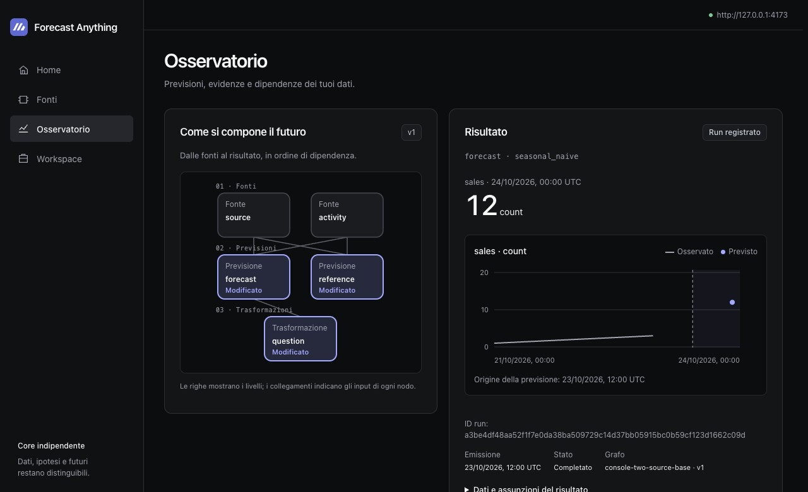
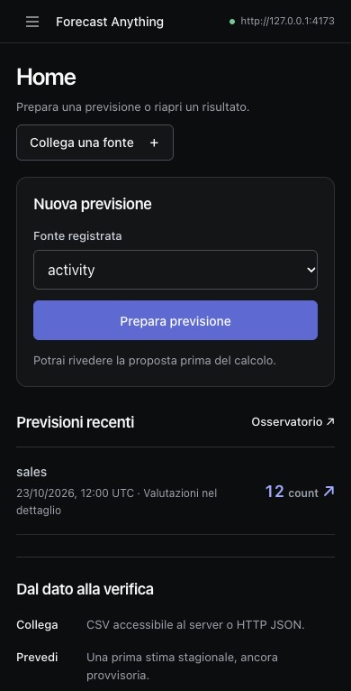

Freeze the source
A snapshot preserves the data available at cutoff. Later corrections leave the original input intact.
Run forecasts through your assistant. Follow every prediction back to the data, assumptions, and model that produced it.
Examples
Synthetic datasets
Daily · items · UTC
| Time | Kind | Value |
|---|---|---|
| 16 Oct | Observed | 10 items |
| 17 Oct | Observed | 16 items |
| 18 Oct | Observed | 14 items |
| 19 Oct | Observed | 12 items |
| 20 Oct | Observed | 18 items |
| 21 Oct | Observed | 15 items |
| 22 Oct | Forecast | 14.382 items |
| 23 Oct | Forecast | 14.793 items |
| 24 Oct | Forecast | 14.501 items |
Issued 21 Oct 2026, 00:00 UTC · demo_retail_timestral v1
Snapshot
95ff2c1cca1fce33cff3017ddb57797918566bd8b60b8d436c5fac390ba17b2d
Run
bdc999714f43b2b4ad611dec32d104cbddcecb728fc58e83958a48689592b1b8
Pinned local Timestral-28M produces these recorded point forecasts. Inputs are synthetic; predictive accuracy has not been evaluated. Displayed values are rounded to three decimals; the data file retains full precision. Marginal quantiles do not establish calibrated joint probabilities.
From the first snapshot to the next evaluation, each step leaves evidence you can revisit.
A snapshot preserves the data available at cutoff. Later corrections leave the original input intact.
Each run keeps its graph version, provider and output. Retrieve the same forecast after closing your assistant.
Score a run when observations arrive, or save a recurring question as a watch for the local worker.
Inspect a recorded forecast, or start a new one from your own data.


Install the local artifact on macOS, prepare the pinned Timestral model, and connect Codex. The guided setup runs the workspace service independently of the chat.
Open the installation guide# After setting forecast_cli in the installation guide
"$forecast_cli" setup --prepare-modelReal Timestral forecasts were verified with the official MCP SDK. Codex Desktop has read stored Timestral results and has separate acceptance evidence for the earlier baseline workflow. Connect your assistant ↗